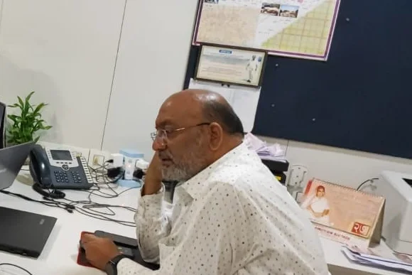
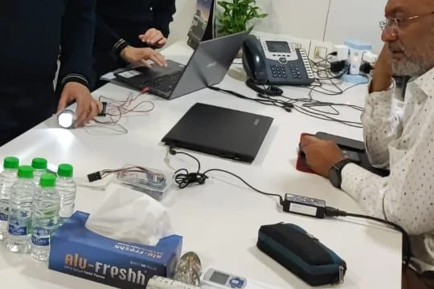
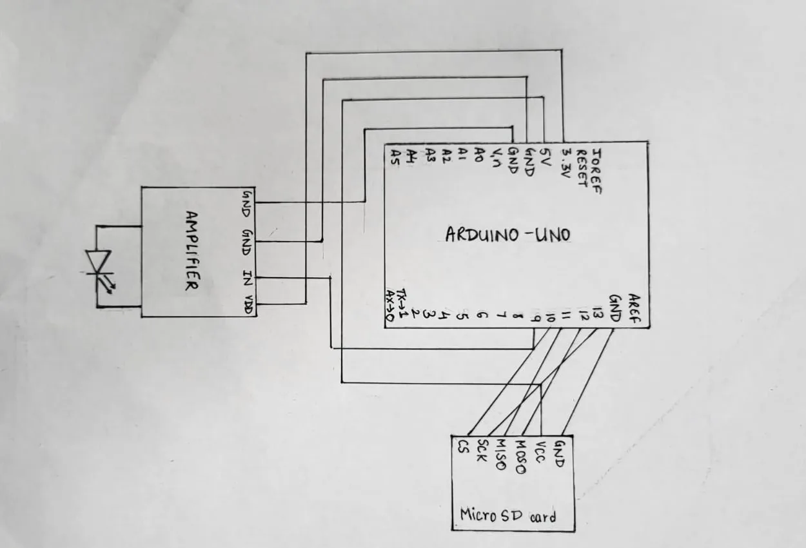
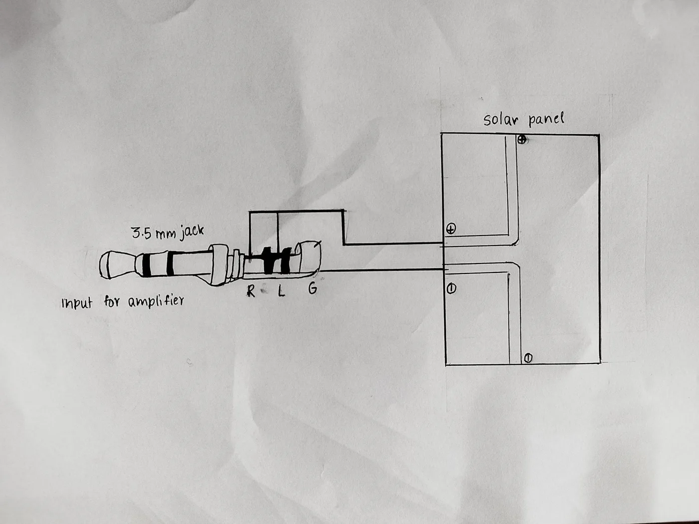
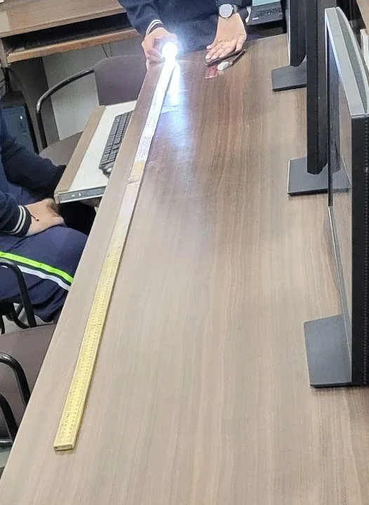
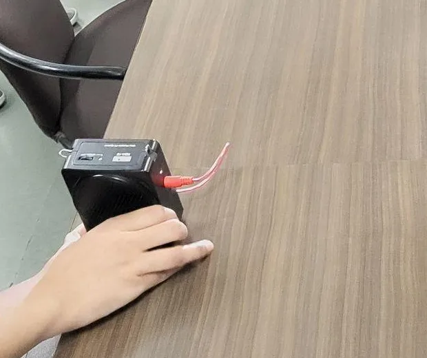

The driver presses one key. Key 1 says “Your trunk is open”, 2 “There is a medical emergency”, 3 “Your fuel is low” and 4 “Someone is in danger”. Keys 5 to 9 hold messages you record yourself.
A horn can’t say what’s wrong
Your horn can only say look at me. It can’t tell the car ahead that its boot is open.


City bus drivers have no direct way to talk to each other on the road. To pass on a warning they stop the bus, or call the control centre and wait.
From key to voice
Press a key and an Arduino plays that message from an SD card into a white LED, whose brightness follows the voice far too fast to see. On the car ahead, a solar panel turns the flicker back into sound.
An Arduino Uno finds that key’s recording on a micro SD card, an 8-bit 16 kHz WAV file, and plays it on pin 9 with the TMRpcm library.

Through an amplifier, the audio drives a super-bright white LED. Its brightness rises and falls with the voice thousands of times a second, so the eye sees steady light.
On the car ahead, solar panels act as the ear. Their voltage follows the light falling on them, which rebuilds the audio signal.

An LM386 amplifier lifts that signal through a 3.5 mm jack and the message plays from the speaker. The receiving car needs no microcontroller at all.
Press a key
Key 1 sends “Your trunk is open.” Press it and the LED flashes the message while your speaker says it aloud.
The key as data
In digital mode the key itself travels as eleven flashes: one dark start bit, eight data bits and a lit stop. At 10 ms a bit, key 1 arrives in 110 ms and the receiving Arduino prints it.
Why light, not radio
Radio and Wi-Fi reach everyone around you. Light reaches only the car you point it at, and every part of it is cheap to buy.
Line of sight
The beam reaches the car it is aimed at, not the whole street, so a message is hard to overhear.
₹1,874 in parts
An Arduino Uno, a keypad, an SD card, an LED, four solar panels and an LM386 amplifier.
No licence, no radio
Visible light needs no spectrum licence and adds nothing to the crowded radio bands.
Already on every car
Cars carry LED lights at both ends, so the transmitter could be the lights they already have.
Plays through the car
The receiver ends in a 3.5 mm jack, the same plug as a car stereo’s AUX input.
Recognition
ViCAS won the City Robotics Science Fair, was entered in the Computer Science category of Bal Vigyan 2023, and was demonstrated to Indore’s city bus control centre.
Ten feet, in any weather
Read the method
- 0 ftMessage playedLED held right at the panelPass
- 2 ftMessage playedClear speech from the speakerPass
- 5 ftMessage playedStepped back along a metre rulePass
- 7 ftMessage playedStill clearPass
- 10 ftMessage playedThe furthest point testedPass
- 0 ftMessage playedSteam blown between LED and panelPass
- 2 ftMessage playedThrough the steamPass
- 5 ftMessage playedThrough the steamPass
- 7 ftMessage playedThrough the steamPass
- 10 ftMessage playedThe furthest point testedPass
- 0 ftMessage playedWater sprinkled into the beamPass
- 2 ftMessage playedThrough falling waterPass
- 5 ftMessage playedThrough falling waterPass
- 7 ftMessage playedThrough falling waterPass
- 10 ftMessage playedThe furthest point testedPass
- 0 ftMessage playedBrown paint sprayed over part of the panelPass
- 2 ftMessage playedPanel partly coveredPass
- 5 ftMessage playedPanel partly coveredPass
- 7 ftMessage playedPanel partly coveredPass
- 10 ftMessage playedThe furthest point testedPass
Designed and built by Anay Mehta

Heard at the bus control centre
At AICTSL in Indore, the director of Chartered Speed called ViCAS “a completely new concept” and said he wants it in his buses once it works both ways.
What comes next
A light and a sensor at both ends of every car, so the car behind can answer; headlights as the transmitter; and a screen that shows each message for deaf drivers.